Round 3 — quests + world interaction
What changed
Quest tracker Rebuilt
The Quest Log (tabs, letter-ladder rail, naked text, 3px cyan line) is replaced by a short stack of UIKit.QuestCard cards at the middle-right: NPC badge (accent + initial + IconArt motif), quest name, ONE objective, a chunky bar with the numbers on it, and a state chip only when the server says so. Same QUESTS table, same remotes, same questsHidden / J / ScreenGui names for HudToggle and SideRail.
Walk-up prompts Unified
Every stock ProximityPrompt draws as a kit board — object name over a [E] VERB pill with a hold sweep, keyboard / gamepad / touch glyphs, locked and success states. The prompt itself is untouched: HoldDuration, distances, keys, Enabled and the server's Triggered are exactly as authored. The pink FavPrompt keeps its own UI.
NPC dialogue One shell
MerchantDialog now paints the kit's white plate, navy edge, shout-face name ribbon (each NPC's accent, as before) and the kit LEAVE / OK buttons. Not one line, reward, flow, portrait or failsafe changed.
Goals bar Kit, kept separate
The nudge wears the card language with an orange GOAL chip and no NPC badge, so a Goal never reads as a story quest. Pick / dismiss / yields untouched. On touch it now sits inside the jump band instead of under the jump button.
1 · Tracker, before / after
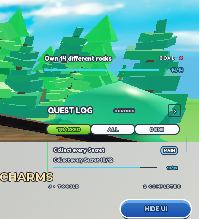
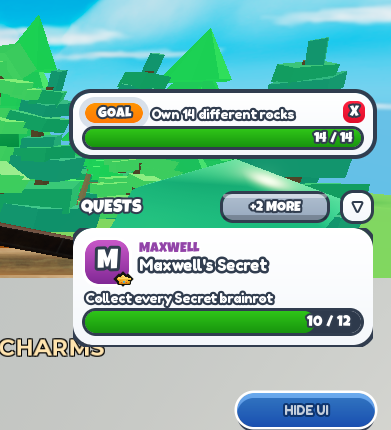
+2 MORE pill and the chevron; Maxwell's card: badge with crown motif, name, "Collect every Secret brainrot", bar 10 / 12. The Goals bar above it on the same card language with its GOAL chip.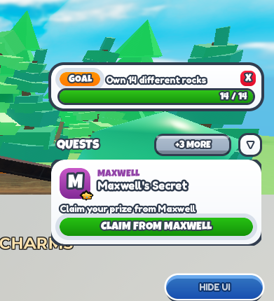
CLAIM FROM MAXWELL; the bar hides because the stage has no count. Fired from a server exec with the real payload shape.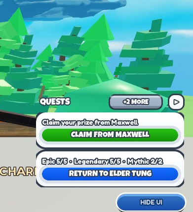
RETURN TO ELDER TUNG, Tung Ready), otherwise the bar. Two whole cards fit the room, the rest sit behind +2 MORE.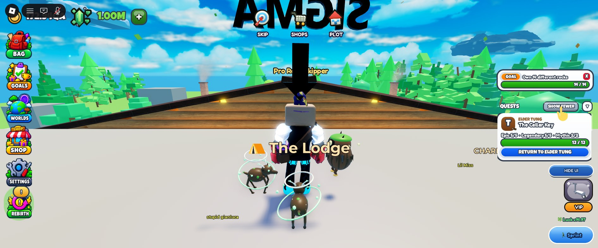
SHOW FEWER and the list scrolls inside the same room (a 3px scrollbar) — the only time a card can be cut by the list edge, and only by choice.2 · Interaction prompt, before / after
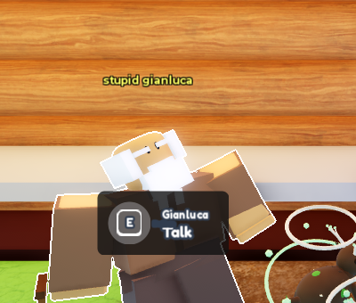
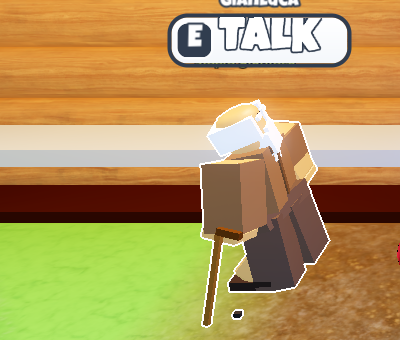
GIANLUCA caption, white pill with the navy edge, the key in a navy cap, TALK in the shout face. Anchored to the same part; on an NPC rig it floats 2.4 studs up so the face stays clear. Stall / wheel / egg boards keep the designers' PromptPart centre.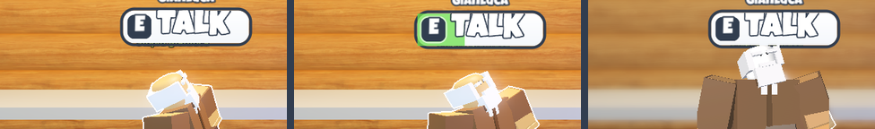
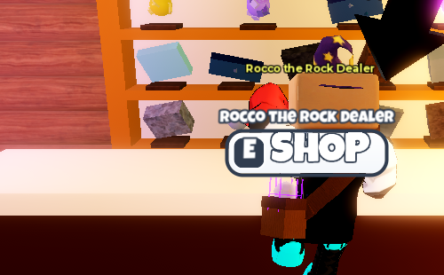
ROCCO THE ROCK DEALER · [E] SHOP. Verbs come from one table keyed by prompt name (TALK / SHOP / SELL / OPEN / CHARMS / SPIN / CLAIM / LIKE / TAKE / UNLOCK / PET), falling back to the first word of the authored ActionText — so "Open Shop" / "Browse" / "Open Sell Menu" no longer disagree across worlds.E (KeyboardKeyCode name), gamepad X (ButtonX; the map covers A / B / X / Y / bumpers / triggers), touch TAP. Locked (PromptState = "locked") greys the pill. UserInputService.LastInputTypeChanged re-caps every live board when a player picks up a controller mid-session.3 · Dialogue, before / after
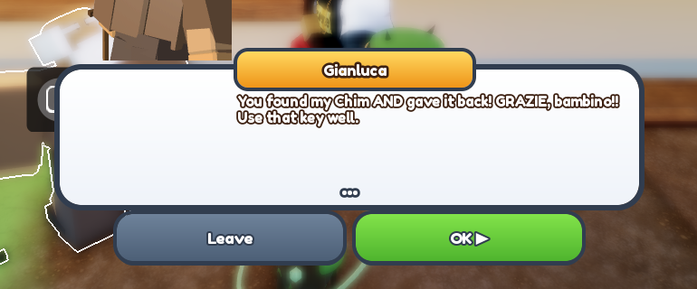
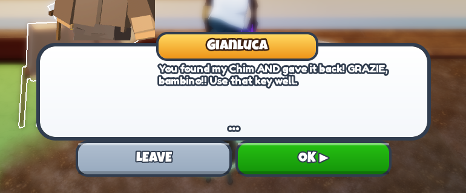
GIANLUCA ribbon in the shout face on his own orange, read-face copy, kit LEAVE / OK ▶. Lower screen, NPC and portrait visible, HUD stood down as before. Enter / advance (tap anywhere) / LEAVE / walk-away (>24 studs) all verified; the walk-up board now stands down with the HUD instead of drawing over the box.4 · Desktop
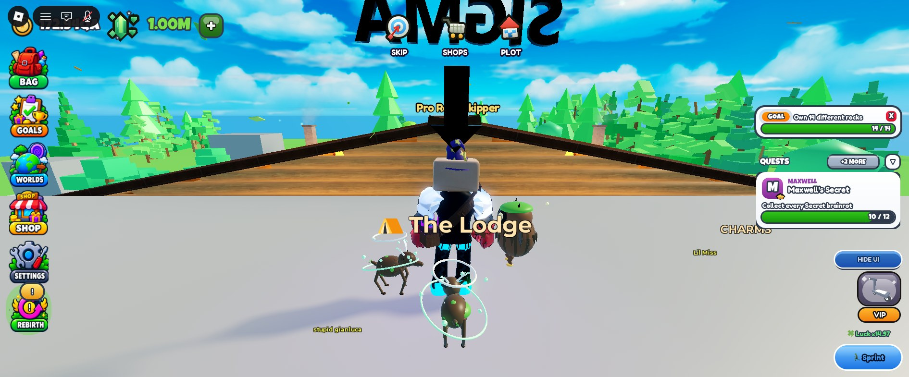
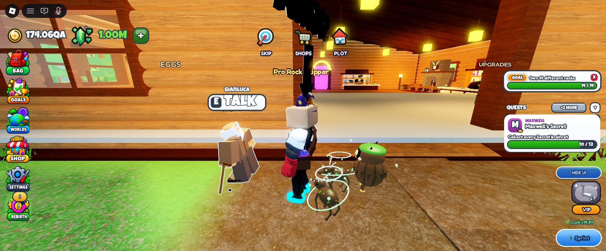
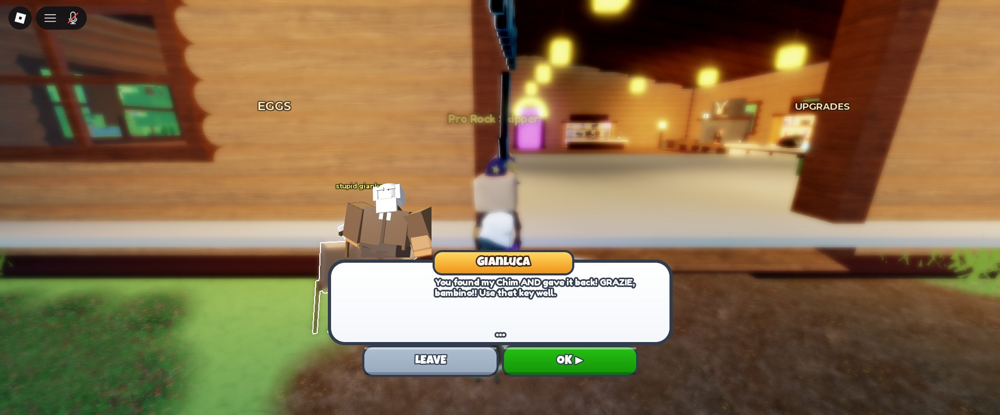
5 · Phone (iPhone 16 sim, 733×371)
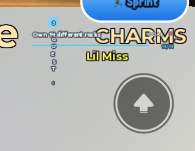
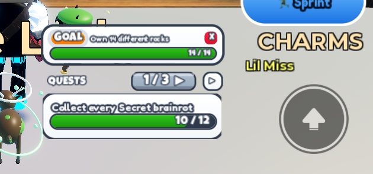
1 / 3 ▶ cycles the quests.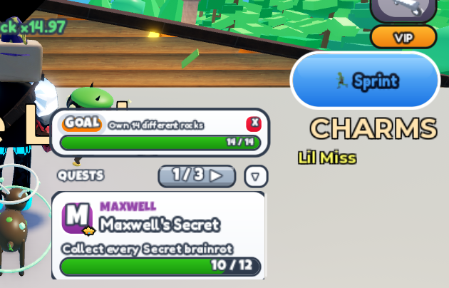
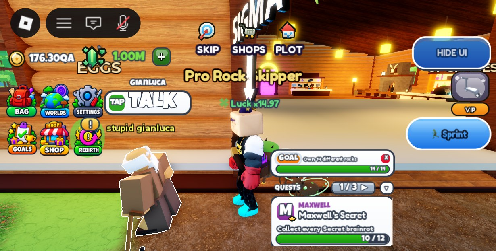
TAP · TALK, board scaled 0.7, still above the head. Touch tap / release on the pill drives InputHoldBegin / InputHoldEnd on the real prompt.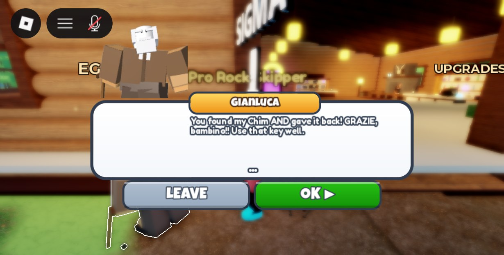
6 · Completion behaviour
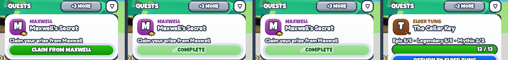
✓ COMPLETE chip (lands 0.30 s after the state) → held 1.2 s → the card slides out to the right (0.22 s) and Elder Tung's card takes the slot; header count drops, wheelWin plays once. Measured timeline: chip at +0.30 s, dismiss at +1.5 s, gone at +1.75 s. Nothing is faked on the client — a state that arrives already finished (or for a card that was never on screen) just drops the entry.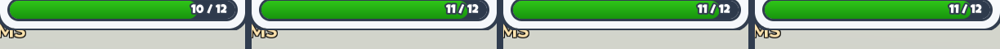
wheelTick plays at 0.25 × the SFX slider. Only when the count grows on the same requirement; a repaint with the same numbers is silent.Checks
| Area | Checked in Play | Result |
|---|---|---|
| Quests | tracker appears on join · objective text · progress numbers · progress update (tween + pop + tick) · RETURN (Tung Ready, Tundra Met, Gianluca stage 2 in the table) · CLAIM (Maxwell 3) · completion beat + dismiss (Maxwell 5) · re-arrival after dismiss · +N MORE / SHOW FEWER · chevron · J · card tap (expand / fold) · phone NEXT cycling | pass accepting a quest was not driven in Play — it writes the owner's live profile; the accept path is unchanged server code and the tracker reads the same State payloads it always did |
| Prompts | keyboard E · gamepad X · touch TAP (module-rendered) · hold sweep 0.5 s + Triggered · two prompts on E and F at once (both boards) · prompt destroyed while shown · prompt disabled while shown · locked state · input-type change re-caps boards · boards stand down with the HUD | pass streamed-in / streamed-out NPCs share the destroy path (AncestryChanged) — not exercised with real streaming in this sitting |
| Dialogue | enter · typewriter advance (tap anywhere) · LEAVE · walk away · HUD stand-down and restore · portrait · phone fit | pass "quest accepted / already active / completed" branches are line choices inside each NPC client and were not changed; the completed branch is what the captures show |
| Layout | desktop 1891×785 · laptop 1366×766 · phone 733×371 · overlap scan of every painted HUD leaf against the tracker rect · HudAudit.Measure() at each native size · HudAudit.Run() size checks on Phone short / small / tall, Tablet, Tablet 4:3, Laptop 768p, Desktop | no overlaps, no under-control hits, no clipped buttons, no small targets for the changed surfaces at every size; see the footprint note below |
| Console | client + server log after every session | zero new errors or warnings — the only warning is the pre-existing [UIKit] panel module PetAbilityHelp did not return { Id, Build } |
| Performance | architecture review of the three new scripts | event-driven no RenderStepped, no Heartbeat, no per-frame scans, no viewports; tweens are Size / Position only with fixed durations; boards are built on PromptShown and destroyed on PromptHidden |
Things that came out of the capture pass (all fixed in d874708)
- U+25BE / U+25B8 are not in LuckiestGuy — the chevron and NEXT pill drew blank; now U+25BC / U+25B6.
- A UIStroke on a TextButton defaults to stroking its text: the prompt pill and the Goals-bar close had no edge. Border, explicitly.
- BillboardGuis do not stand down with a disabled ScreenGui: prompt boards drew over the dialogue. Mirrored the host's Enabled onto every board.
- A board on an NPC rig sat across the chest; lifted 2.4 studs on rigs only.
Known and deliberate
- Dialogue copy renders white with a navy outline on the white box. That is the house readability floor in UIPolish (owner rule, 2026-08-21): any neutral dark ink on a NoPolish label is lifted to white + ink stroke, which is what every kit read label (Season Pass rows, Bag tiles) already does. The card and the dialogue follow it rather than fight it.
- Footprint on touch. HudAudit flags the phone card and the Goals bar at 22–28% of the width (its cap is 18%). The card is the same 300 authored px as on desktop at the 0.6 widget scale; going narrower wraps every objective. The old expanded log had the same rect. Flagged, not changed — see the question below.
- Chevron vs J. The chevron's compact state is session-local (SettingsService's key list was not touched; a phone boots compact). J is the persisted global quest-HUD hide and folds the Goals bar through HudToggleClient, as it always did.
- Pre-existing, untouched: MainUI's tab bar reports "under topbar" in HudAudit on every size; the bottom-right stack budget reads 174 of 172 px on the phone; the Humanoid nametag "stupid gianluca" over the NPC.
Final UX decisions (Balkan, 2026-09-19)
Round 3 approved
Scope fence held: no Quests menu, balance, quest text, new NPCs, Nico, world or Bag work.
Phone card width keep 300
The phone quest card stays at 300 authored px at the current widget scale (24% of an iPhone 16's width, 12px objective on the glass). Not narrowed to 250. The HudAudit footprint line for it is accepted.
Chevron ≠ Goals bar decoupled
The chevron (and a card tap) now only compacts / expands the NPC quest-card stack, for the session. The Goals bar stays where it is. J keeps the global quest-HUD hide: the whole stack slides off the right edge and HudToggleClient folds the Goals bar on the same persisted questsHidden, exactly as it did. HIDE UI is untouched (rail + tab bar). No Goals or quest logic changed — one script, QuestTrackerClient.
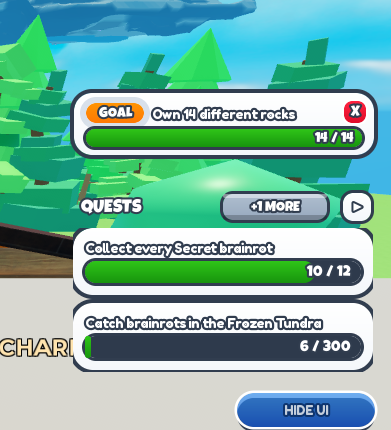
+1 MORE, chevron ▷ — and the GOAL nudge above them stays put. Re-tested on desktop, laptop (1366×766) and iPhone 16 (733×371): chevron compacts only; J hides both and J brings both back (tracker right edge 1269 / 1706 / 1073 px past the screen while hidden, back to 911 / 1348 / 581); HIDE UI still folds the rail and tab bar and nothing else; HudAudit 0 problems on desktop and laptop, the phone shows only the accepted footprint lines; painted-leaf overlap scan 0 hits; console zero new errors or warnings; questsHidden ends the session false, as it began.Commits
| Commit | What |
|---|---|
3e0275b | audit document + re-sync of 15 mirrors from Studio (pre-edit) |
6021541 | chore(mirror): UIPolish re-synced (the readability floor the round relies on) |
b4f8334 | feat(ui): QuestCard, QuestTrackerClient rewrite, InteractionPrompt + client, MerchantDialog shell, QuestBarClient on the kit |
d874708 | fix(ui): capture-pass fixes (glyphs, pill border, boards stand down, rig boards above the head) |
30a9fc0 | docs(qa): this report |
| (next) | fix(ui): chevron compacts only; J / questsHidden hides the stack — Balkan's final decisions |
docs/qa/round3/README.md. Studio is the source of truth; every touched script was pulled back byte-exact into game-src/place-full/ through the bridge before committing.